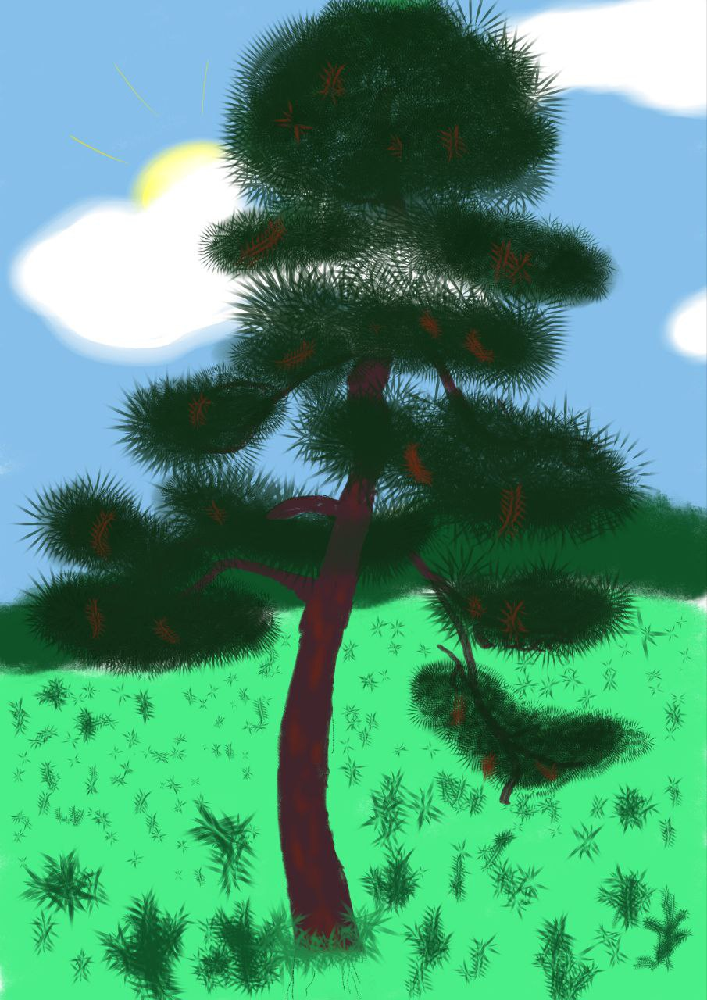

Сосна
Будучи світлолюбною породою, сосна звичайна часто скидає нижні гілки в процесі росту, залишаючи чистий і прямий стовбур. Її коренева система в основному має стрижневий тип, але структура і розгалуження коренів значною мірою залежать від умов ґрунту. У заболочених місцевостях корені здебільшого залишаються близько до поверхні, щоб отримувати воду, тоді як на сухих ґрунтах дерево розвиває більш широку поверхневу кореневу систему для максимальної абсорбції поживних речовин і вологи. Ця адаптивність кореневої системи підкреслює стійкість сосни звичайної та її здатність виживати в різних екологічних умовах.